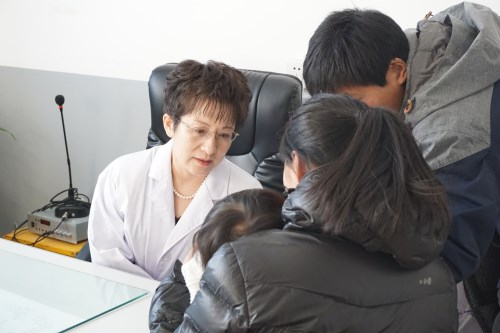

Zhang Xiaoyan
Guidian Volunteer Network date：2017-07-20 source：China Volunteer Service Network


Zhang Xiaoyan is the chief physician of the Department of Dermatology of the China-Japan Friendship Hospital. He is a professor and doctoral tutor of the Peking University School of Medicine. He is the representative of the 14th National People's Congress of Beijing. He is the head and promoter of the National Community Medical Service Volunteer Group. In 2015, she launched an initiative at the Social Work and Volunteer Service Salon of the China Volunteers Association, calling for the establishment of a national high-level, full-disciplinary medical expert volunteer service team, volunteering to train grassroots doctors and send patients to the underdeveloped areas. Going to the countryside. Under her influence and inspiration, the “National Community Medical Service Volunteer Group” was quickly established and developed into the nationwide medical volunteer service community with the largest scale, the highest level and the highest number of service bases in China.
In order to organize volunteer service activities, Zhang Xiaoyan worked tirelessly on the front line of volunteer service in the daily work. In Wuxiang, Shanxi, more than 120 patients were diagnosed in a half-day period; in Baoqing County, Heilongjiang Province, the disease was adhered to the clinic, patiently answering patient questions; at the Double Ninth Festival, the volunteer group went to the Miyun Gulou Street Welfare Institute to warm the lonely elderly. On the occasion of the 95th anniversary of the founding of the party, the volunteer group led the volunteer group to rush to Baihe County, Shaanxi Province to carry out large-scale clinic activities; on the International Volunteer Day, led the volunteer group to go to Gu'an, Hebei Province, to send the medical charity to the residents.。
In the past two years, Zhang Xiaoyan led the Volunteer Group to conduct medical volunteer service activities in Beijing, Hebei, Shanxi, Shaanxi, Heilongjiang, Sichuan and other places for nearly 1,000 times, providing free medical consultation and health guidance for nearly 10,000 grassroots patients, serving nearly 5,000 county and city hospitals. The medical staff of the community and township hospitals carried out assistance activities such as consultation and diagnosis and treatment, and practiced the spirit of medical volunteer service of “healthy people, love and no love”. Her deeds have been reported by the Beijing Evening News and Phoenix Information. I have won the honors of "China's Medical and Health Care Development Foundation", "German Technology, Good People, Doctors", "Beijing Outstanding Young and Middle-aged Physician Award" and "Beijing March Eighth Red Flag Medal". In October 2016, he was selected as the "2016 Beijing Model" month model.
【Editor in charge: Liu Yanan】